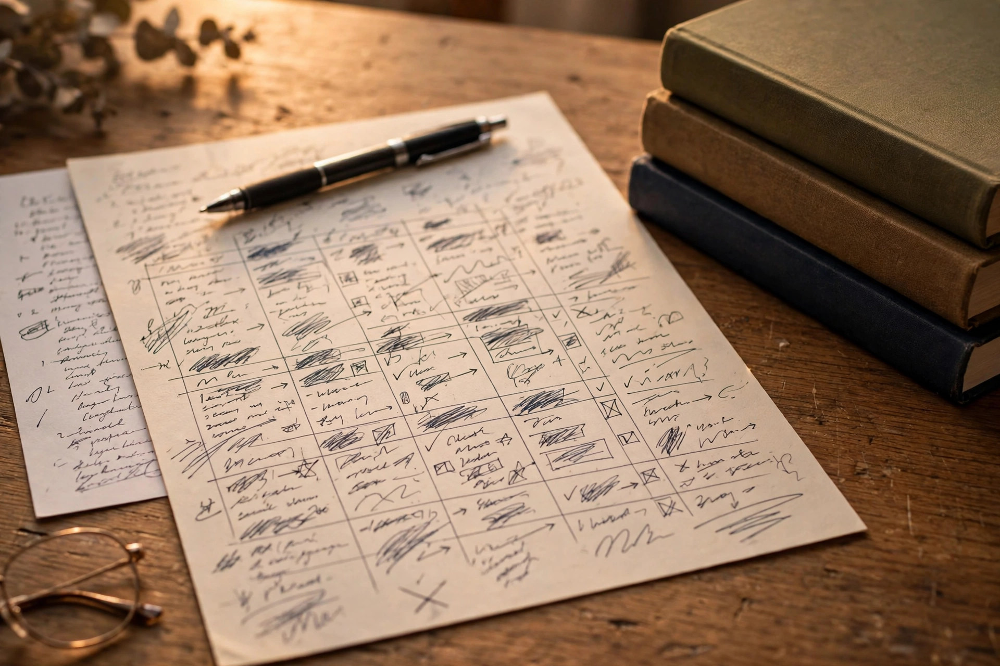
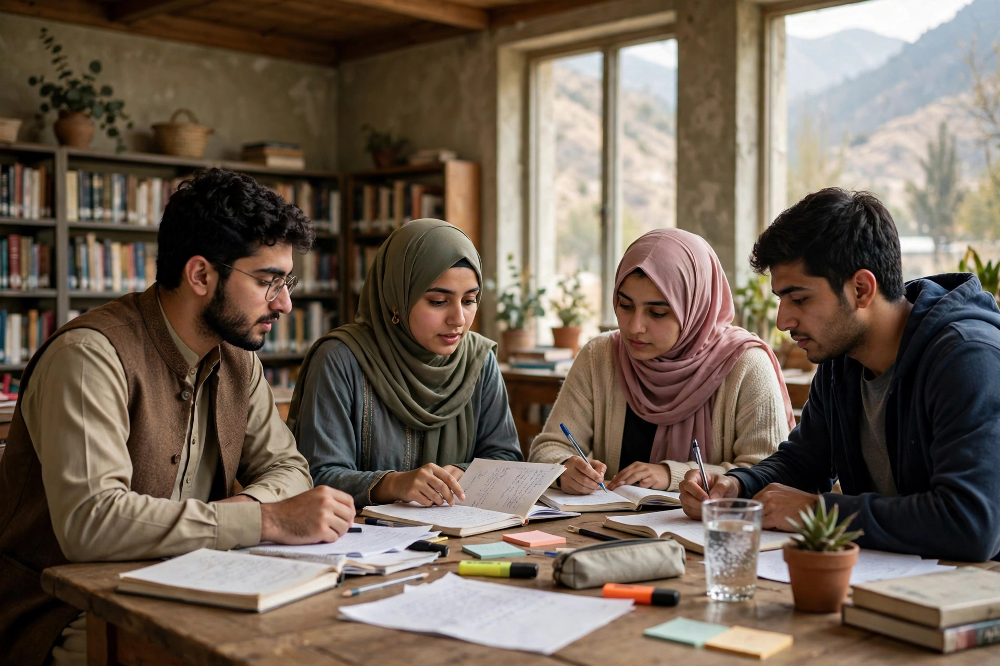

Every year, thousands of candidates across Balochistan apply for provincial government jobs through the Balochistan Public Service Commission — and most are filtered out by a single screening test. The good news? BPSC tests are among the most predictable exams in Pakistan: the syllabus and the question style both repeat, so the right plan lets an average student outscore rivals who studied wrong.
This guide covers BPSC tests in 2026 — the pattern, the syllabus, the Balochistan topics that decide merit, a subject-wise strategy, and a 30-day plan.
One honest warning first: BPSC does not run one single paper for every post. The pattern and syllabus change with the advertisement, so read your own advertisement first.
Which BPSC Track Are You On?
BPSC recruits through three routes, each needing different preparation:
- General recruitment posts: assistants, clerks, inspectors and similar posts. Selection starts with one MCQ screening test, then an interview. Most of this guide is for this track.
- Specialist and lecturer posts: subject specialists, lecturers and technical posts. Often half or more of the paper tests the professional subject itself.
- The PCS / BCS competitive examination: Balochistan's provincial civil service track — an MCQ screening test, then descriptive written papers, then a viva voce. PCS candidates also need essay and precis practice.
The BPSC Screening Test Pattern
For general posts, the screening test commonly looks like this:
- Total questions: commonly 100 MCQs
- Total marks: commonly 100 (1 mark per question)
- Time allowed: commonly around 90 minutes
- Negative marking: varies by advertisement — some tests carry a penalty per wrong answer, others do not, so check your advertisement first
- Qualifying threshold: a shortlist is normally drawn from the top scorers, so every mark matters
At 100 questions in about 90 minutes you get roughly 54 seconds per question — speed matters as much as knowledge. Practise with a timer, and take full-length mocks on our BPSC test page.

What the BPSC Syllabus Covers
The general screening syllabus covers the same core areas as other commissions, plus Balochistan-specific knowledge:
- English: grammar, vocabulary, sentence correction, synonyms and antonyms, prepositions, voice, narration
- General Knowledge: world geography, famous firsts, international organisations, awards and sports
- Pakistan Studies: the Pakistan Movement, constitutions, national symbols, rivers and dams
- Islamiat: beliefs, the Quran, Seerah, Ghazwat and Khulfa-e-Rashideen
- Current Affairs: the last 6–12 months — politics, the judiciary, summits and major events
- Everyday Science: the human body, vitamins, diseases, SI units, inventions and the solar system
- General Ability: arithmetic — percentages, ratios, averages and simple algebra
The Balochistan Edge: Topics That Decide Merit
A visible share of every BPSC paper tests Balochistan itself — candidates who revise it pick up easy marks others leave behind:
- Districts and divisions: the divisions and their districts, district headquarters, and the largest and smallest districts
- Geography: rivers (Hingol, Dasht, Zhob, Bolan), ranges (Sulaiman, Toba Kakar, Kirthar) and the Makran coast
- Resources and economy: minerals and gas — Sui gas, coal, chromite, marble — plus Gwadar port and CPEC
- History and culture: the Khanate of Kalat, the accession of Balochistan, famous figures, and the languages of the province
- Provincial institutions: the Balochistan Assembly, the High Court, the Governor and Chief Minister, and the NFC award share
Learn the facts as MCQs in short daily sets — ten facts a day for three weeks is around 200 facts.
Subject-Wise Preparation Strategy
English — the section that separates toppers
English is where screening tests are often won or lost. Treat it as a pattern test: learn the rules behind prepositions and tenses, build vocabulary in daily sets of ten words, and practise error detection. Practise in English MCQs and note every rule you get wrong.
Pakistan Studies & Islamiat — high return, low effort
These two subjects are pure memory and the most predictable part of any BPSC paper. Constitutions and their years, the Pakistan Movement timeline, Ghazwat and Khulfa-e-Rashideen — the same facts return in every paper. Two weeks of consistent practice here can secure 15+ marks. Use our Pakistan Studies MCQs and Islamiat MCQs in timed sets.
Current Affairs & General Knowledge — the freshest marks
Cover the last 6–12 months: the federal and provincial cabinets, the judiciary, summits, sports and major awards, plus Balochistan news. Read one digest weekly and convert everything into MCQs in your notebook. For GK, revise by cluster — world capitals, famous rivers, firsts in Pakistan, organisations and their headquarters — one cluster at a time. Use our Current Affairs MCQs and General Knowledge MCQs.
Everyday Science & General Ability — breadth beats depth
Cover the human body basics, vitamins, SI units and famous inventions, and the arithmetic patterns examiners reuse. Short daily MCQ practice beats textbook reading. Use Everyday Science MCQs and Basic Mathematics MCQs in timed sets of 20–30.

Your 30-Day BPSC Study Plan
Here is a week-by-week skeleton — adjust the hours to your routine:
- Days 1–7: Foundation. One reading pass of Islamiat, Pak Studies and Everyday Science. Start 30 English MCQs and 10 Balochistan facts daily.
- Days 8–14: Volume. Attempt 200+ mixed MCQs daily. Begin your post-specific syllabus if you are on the lecturer track.
- Days 15–21: Past papers and mocks. Solve recalled past papers and take three full 100-MCQ mocks under timed conditions. Keep an error notebook — every wrong answer gets written down with its explanation.
- Days 22–30: Simulation. Take full mocks in 90 minutes, like our exam simulator. Revise only your error notebook and Balochistan list in the final 3 days.
Exam-Day Strategy: How Toppers Attempt the Paper
- First pass (40 min): answer only what you know. Skip everything doubtful — one hard question must not steal time from ten easy ones.
- Second pass (30 min): return to skipped questions. Eliminate options and guess only when you can rule out two options — and only if your advertisement's negative marking rules allow it.
- Final 20 min: review marked questions and fill any blanks; never leave one unattempted if there is no negative marking.
4 Mistakes That Cost Aspirants Their Selection
- Preparing for the wrong track. A general screening plan will not carry a lecturer or PCS candidate.
- Ignoring Balochistan-specific topics. These are the easiest marks in the paper — skipping them hands merit to rivals.
- Reading books instead of solving MCQs. This is an MCQ exam — prepare in MCQ format. Theory without practice is decoration.
- No timed practice. Knowledge without speed is useless in a 90-minute paper. Without a timer, mock scores are fiction.
- BPSC has three tracks — general screening, lecturer/specialist, and PCS — match your plan to your advertisement.
- General screening is commonly 100 MCQs in about 90 minutes; negative marking varies, so check your advertisement.
- Balochistan topics — districts, rivers, minerals, Gwadar, history — are the easiest marks and the most skipped.
- English, Islamiat, Pak Studies and Current Affairs are the most predictable sections — master them with timed practice.
Frequently Asked Questions
What is the BPSC screening test pattern?
Commonly 100 MCQs in about 90 minutes — but the exact pattern and any negative marking depend on your advertisement. Always confirm against it.
Is there negative marking in BPSC tests?
It varies — some BPSC tests carry a penalty per wrong answer and others do not. Check your advertisement before deciding how boldly to guess.
Which subjects carry the most weight in BPSC screening tests?
English, General Knowledge, Pakistan Studies, Islamiat, Current Affairs, Everyday Science and General Ability form the core, plus Balochistan-specific knowledge. Lecturer posts give roughly half the paper to the professional subject.
Start practicing — free, no login needed
195,450+ MCQs · solved past papers · real exam simulator with timer & negative marking